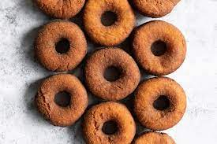

Donuts

Description
A simple cake doughnut lightly spiced with cinnamon and nutmeg.
Coat with cinnamon-sugar, or a confectioners' sugar glaze to make it fancy!.
Ingredients
- 2 cups all-purpose flour
- ½ cup white sugar
- 1 teaspoon salt
- 1 tablespoon baking powder
- ¼ teaspoon ground cinnamon
- 1 dash ground nutmeg
- 2 tablespoons melted butter
- ½ cup milk
- 1 egg, beaten
- 1 quart oil for frying
Steps
- Heat oil in deep-fryer to 375 degrees F
- In a large bowl, sift together flour, sugar, salt, baking powder, cinnamon and nutmeg.
- Then mix in butter until crumbly
- Stir in milk and egg until smooth
- Knead dough lightly, then turn out onto a lightly floured surface. Roll or pat to 1/4 inch thickness
- Cut with a doughnut cutter, or use two round biscuit cutters of different sizes.
- Carefully drop doughnuts into hot oil, a few at a time.Fry, turning once, for 3 minutes or until golden. Drain on paper towels.